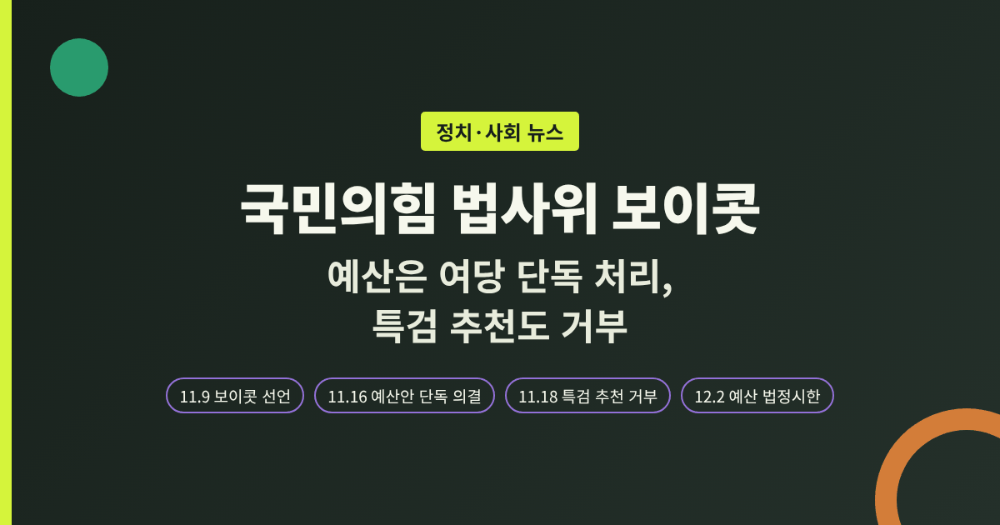
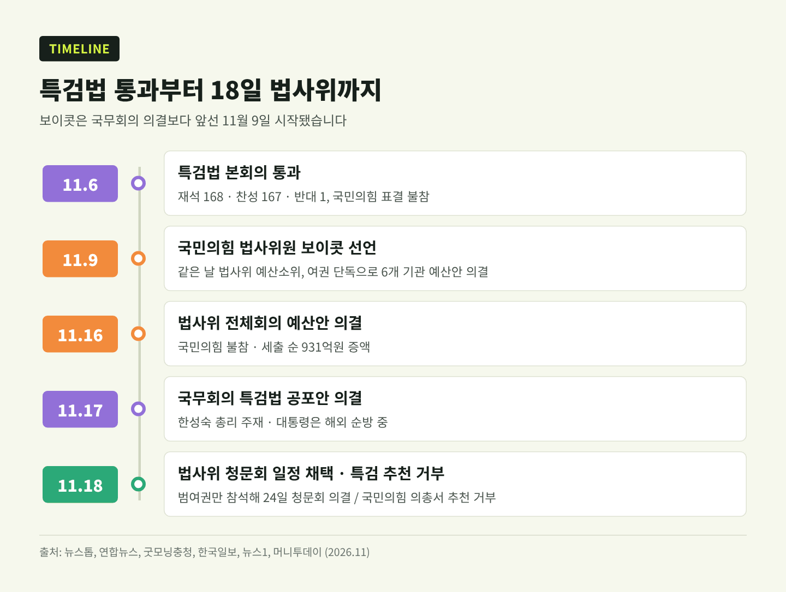
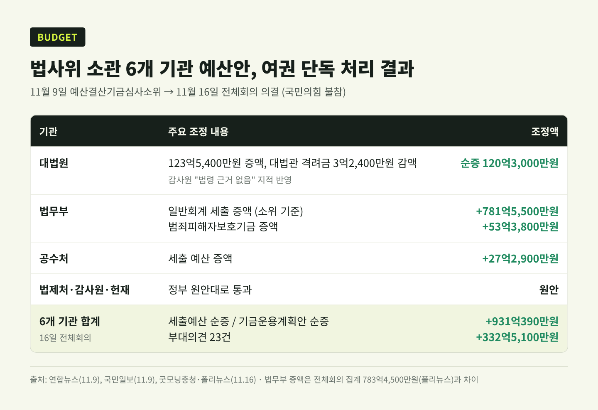
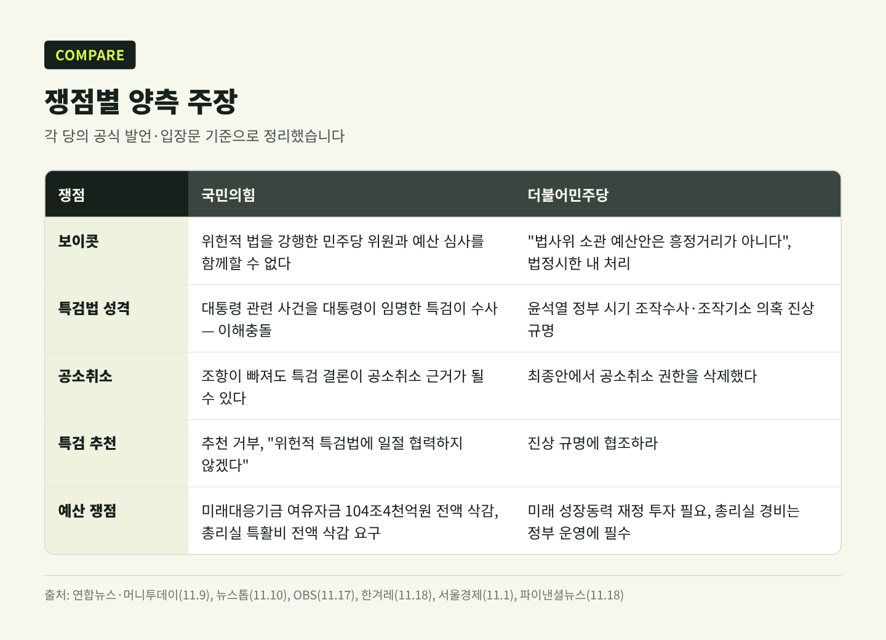
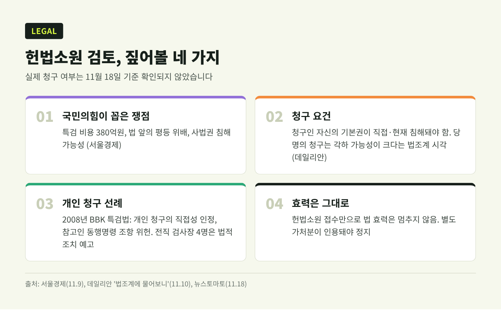
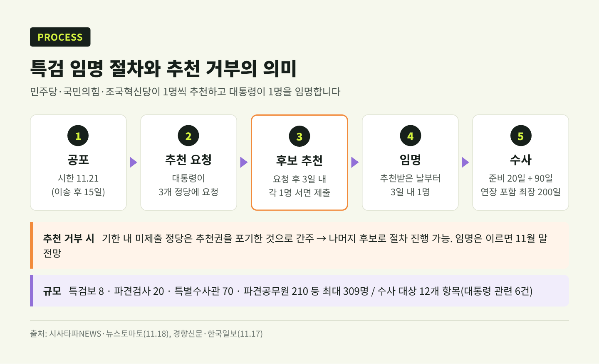
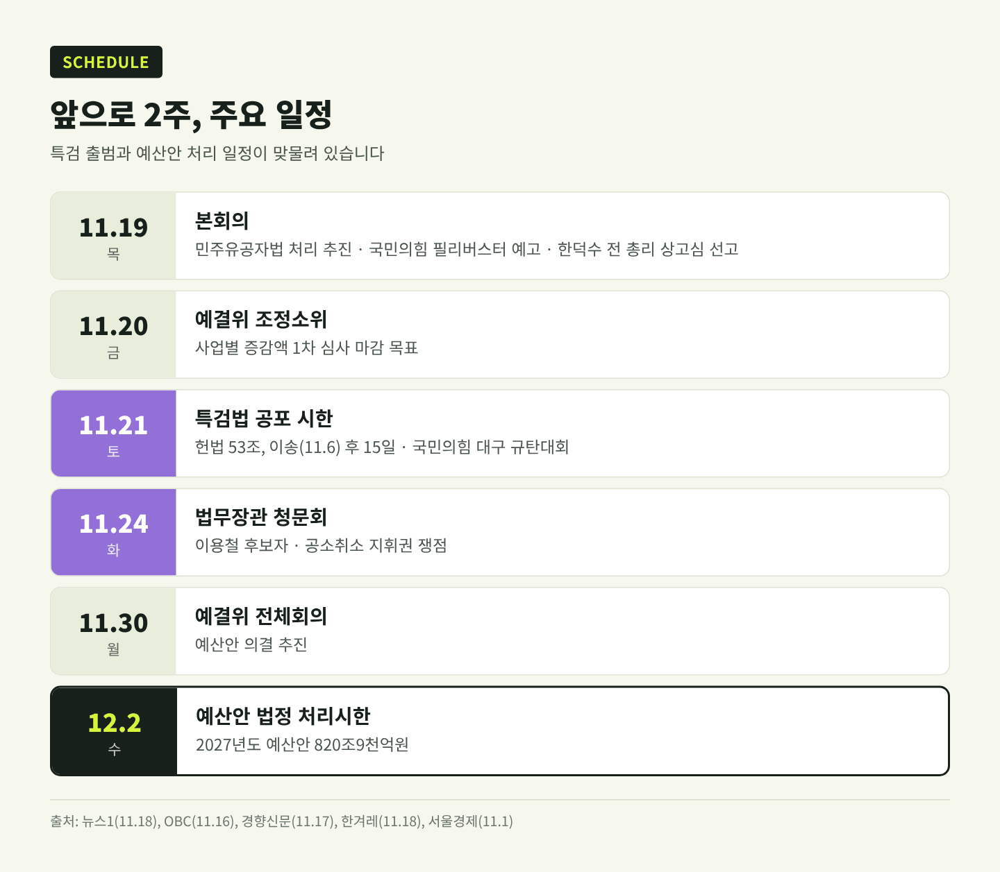

국민의힘 법사위 보이콧, 예산은 여당 단독 처리되고 특검 추천도 거부

이번 글에서는 국민의힘의 법사위 예산심사 보이콧이 열흘째 이어지는 상황을 정리해 보겠습니다. 11월 18일 법사위가 국민의힘 없이 다시 열렸고, 같은 날 국민의힘은 특검 후보 추천 거부를 공식화했습니다. 무엇이 처리됐고 무엇이 남았는지, 양측의 주장과 앞으로의 일정을 차례로 살펴봅니다.
세 줄 요약
- 국민의힘 법사위원들은 11월 9일 '조작기소 특검법'에 반발해 예산 심사를 포함한 법사위 일정 불참을 선언했습니다.
- 법무부·대법원 등 법사위 소관 6개 기관 예산안은 9일 소위, 16일 전체회의에서 여권 단독으로 의결됐습니다. 18일 회의에서는 이용철 법무부 장관 후보자 청문회(24일) 일정이 채택됐습니다.
- 보이콧은 법사위에 한정돼 있습니다. 예결위에서는 국민의힘이 참여한 채 감액 공방이 진행 중이며, 법정 처리시한은 12월 2일입니다.
■ 11월 18일, 법사위에서 있었던 일
18일 오후 국회 법제사법위원회 전체회의는 범여권 위원만 참석한 채 열렸습니다. 국민의힘 위원은 전원 불참했습니다(머니투데이·뉴스1·서울경제, 11월 18일).
이날 처리된 핵심 안건은 이용철 법무부 장관 후보자 인사청문회 실시계획서입니다. 청문회는 24일로 잡혔습니다. 이재명 대통령이 인사청문 요청안을 국회에 낸 것은 하루 전인 17일입니다.
증인·참고인 출석 요구 안건은 의결하지 않았습니다. 여야 이견이 예상된다는 이유로 보류하고 간사 간 협의를 이어가기로 했습니다(서울경제). 수용자 영치금 한도를 1인당 400만원으로 묶는 형집행법 개정안도 상정만 하고 계류시켰습니다. 시행 시기가 내년 6월 1일로 늦다는 점이 이유로 꼽혔고, 법무부령인 '보관금품 관리지침' 개정을 먼저 추진하기로 했습니다. 농협중앙회장 직선제를 담은 농협법 개정안은 전체회의를 통과했습니다.
서영교 법사위원장은 국민의힘의 불참을 두고 "무노동 무임금"이라고 말하며 지도부에 회의 참석을 강하게 요구했습니다(머니투데이·뉴스1).
같은 날 오전, 국민의힘은 의원총회에서 별도의 결정을 내놓았습니다. 정점식 원내대표는 "국민의힘은 특검 추천을 거부하겠다"며 "위헌적 특검법에 일절 협력하지 않겠다"고 밝혔습니다(한겨레·뉴스1).

■ 보이콧은 언제, 왜 시작됐나
보이콧이 시작된 날은 국무회의 의결보다 앞선 11월 9일입니다. 특검법이 6일 본회의를 통과한 지 사흘 뒤였습니다. 당시 표결은 재석 168명 중 찬성 167명, 반대 1명이었고 국민의힘은 표결에 참여하지 않았습니다(뉴스톱).
9일 박형수 법사위 야당 간사와 윤상현·김민전·곽규택·주진우 의원은 국회 소통관에서 기자회견을 열었습니다. 법사위 예산소위를 포함해 앞으로 법사위 일정에 나가지 않겠다는 선언이었습니다(디지털타임스).
국민의힘이 내세운 근거는 크게 세 가지입니다.
- 이해충돌: 수사 대상에 이 대통령이 피고인으로 재판받아 온 사건이 들어 있는데, 특검을 임명하는 사람도 대통령이라는 점입니다.
- 공소취소 우려: 법안에서 공소취소 조항은 빠졌지만, 특검 결론이 공소취소나 공소기각의 근거로 쓰일 수 있다는 주장입니다(서울경제).
- 처리 절차: 3일 당론 채택, 4일 법사위 의결, 6일 본회의 통과까지 사흘 만에 처리됐고 필리버스터도 표결로 종료됐다는 비판입니다(디지털타임스).
박 간사는 성명에서 민주당 법사위원들과 함께 예산 심사를 하는 것은 "국회의원으로서의 양심이 허락하지 않는다"고 밝혔습니다(머니투데이·연합뉴스).
민주당 법사위원들은 같은 날 입장문으로 맞섰습니다. 예산심사 거부를 "정치검찰 방탄용 민생 인질극"이라고 규정하고, "법사위 소관 예산안은 흥정거리가 아니다"라며 법정시한 내 처리를 약속했습니다(연합뉴스). 민주당은 특검법의 목적이 윤석열 정부 시기 국가기관의 조작수사 의혹 규명이며, 최종안에서 공소취소 권한을 삭제했다는 점도 강조했습니다. 한병도 원내대표는 "정쟁을 중단하고 예산 심사에 집중해야 한다"고 말했습니다(뉴스톱).
■ 법사위 소관 예산은 이미 처리됐다
보이콧 선언 당시에는 심사 차질과 연말 입법 지연 우려가 나왔습니다(서울경제·뉴스톱). 실제로는 남은 여권 위원들이 단독으로 절차를 끝까지 밟았습니다.
9일 김한규 소위원장(민주당)이 주재한 법사위 예산결산기금심사소위는 법무부·대법원·공수처·법제처·감사원·헌법재판소 등 6개 기관의 2027년도 예산안을 의결했습니다(연합뉴스).
- 대법원: 123억5,400만원 증액, 본부 기본경비 3억2,400만원 감액 → 순증 120억3,000만원
- 대법관 격려금: 감액된 3억2,400만원이 이 항목입니다. 감사원은 8월 감사에서 법령 근거가 없다고 지적했고, 2022년부터 지난 9월까지 지급액이 12억9,900만원이라고 밝혔습니다(국민일보).
- 법무부: 일반회계 781억5,500만원, 범죄피해자보호기금 53억3,800만원 증액
- 공수처: 27억2,900만원 증액
- 법제처·감사원·헌법재판소: 원안 통과
애초 11일 전체회의에서 의결할 예정이었던 이 예산안은 16일 전체회의에서 국민의힘 불참 속에 처리됐습니다. 6개 기관 세출예산은 순 931억390만원, 기금운용계획안은 순 332억5,100만원 늘었습니다. 부대의견도 23건 붙었습니다(굿모닝충청·폴리뉴스).

격려금 삭감을 두고 민주당은 "격려금의 지급 주체는 기관장인 조 대법원장"이라며 국정조사를 요구했습니다(국민일보). 법사위는 감사원 지적을 반영했다는 입장입니다(폴리뉴스). 국민의힘은 이 심사에 참여하지 않았기 때문에, 개별 증감액에 대한 국민의힘의 공식 입장은 확인되지 않습니다.
■ 예산안 전체가 멈춘 것은 아니다
이 사안을 '예산 국회 파행'으로만 읽기는 어렵습니다. 국민의힘의 보이콧은 법사위에 한정돼 있기 때문입니다.
2027년도 정부 예산안은 820조9천억원으로, 올해 본예산보다 93조원(12.8%) 많은 역대 최대 규모입니다(서울경제). 이를 다루는 예결위 예산안조정소위는 16일부터 가동 중입니다. 여당 9명, 야당 6명 등 15명이 20일까지 사업별 증감액을 심사하고, 30일 예결위 전체회의 의결을 추진합니다(OBC).
이 소위에는 국민의힘도 참석하고 있습니다. 다만 특검 갈등은 이 자리에서도 모습을 드러냈습니다. 17일 소위에서 국민의힘은 총리실 특수활동비 4억5천만원 전액, 업무추진비 10억원 중 5억원 삭감을 요구했습니다. 나경원 의원은 총리가 특검법 공포안을 의결한 점을 근거로 들었습니다. 민주당 허성무 의원은 정부 운영에 필요한 경비라며 반대했고, 이광재 예결위원장은 해당 항목을 보류했습니다(파이낸셜뉴스).
예산 쟁점은 특검 말고도 많습니다. 국민의힘은 162조3천억원 규모로 신설되는 미래대응기금 가운데 여유자금 104조4천억원 전액 삭감 등을 주장합니다. 민주당은 미래 성장동력을 위한 재정 투자가 필요하다는 입장입니다(서울경제). 특검을 둘러싼 대치가 이런 쟁점 협상의 분위기에 영향을 줄 수 있다는 관측이 나오는 이유입니다(OBS·한국일보).

■ 헌법소원 카드, 문턱은 어디에 있나
국민의힘은 특검법에 대한 헌법소원 제기를 검토해 왔습니다. 쟁점으로는 특검에 세금 380억원이 투입된다는 점, 법 앞의 평등 원칙 위배, 사법권 침해 가능성을 꼽았습니다(서울경제). 박형수 간사는 위헌법률심판 제청 신청도 언급했습니다(연합뉴스).
법조계에서는 요건부터 따져봐야 한다는 시각이 있습니다. 헌법소원은 청구인 자신의 기본권이 직접, 현재 침해돼야 합니다. 김소정 변호사는 특검 추천권이 "법률이 부여한 권능"이어서 각하될 가능성이 크다고 봤습니다. 최건 변호사도 당이 직접 사법구제를 받기는 쉽지 않아 보인다고 했습니다(데일리안).
다른 길도 거론됩니다. 특검 수사를 받을 가능성이 구체적인 개인이 청구하는 경우입니다. 2008년 BBK 특검법 사건에서 헌재는 이런 청구의 직접성을 인정했고, 참고인 동행명령 조항을 위헌으로 봤습니다. 송경호 전 서울중앙지검장과 홍승욱·김유철·신봉수 전 수원지검장 등 전직 검사장 4명은 "헌법적, 법적 조치를 강구할 것"이라고 예고했습니다(ㅍㅍㅅㅅ·뉴스토마토). 실제 청구 여부는 아직 확인되지 않았습니다.
헌법소원을 내더라도 법의 효력이 자동으로 멈추지는 않습니다. 효력을 멈추려면 별도의 가처분이 받아들여져야 합니다(데일리안).

■ 특검 추천 거부, 절차에는 어떤 영향이 있나
특검법은 민주당·국민의힘·조국혁신당이 1명씩 후보를 추천하고, 대통령이 그중 1명을 임명하도록 정하고 있습니다. 추천 요청을 받은 날부터 3일 안에 서면으로 내야 하며, 내지 않으면 추천권을 포기한 것으로 봅니다. 대통령은 추천을 받은 날부터 3일 안에 임명합니다(시사타파·경향신문).
따라서 국민의힘이 추천하지 않아도 나머지 두 당의 후보로 절차는 이어질 수 있습니다. 국민의힘은 법이 위헌적이고 자당 추천 인물이 임명될 가능성도 없다는 입장입니다. 특검은 이르면 이달 말 임명될 것이라는 전망이 나옵니다(뉴스토마토).
특검법의 공포 시한은 21일입니다. 헌법 53조는 이송 후 15일 이내 공포를 규정하는데, 법안은 6일 정부로 이송됐습니다(경향신문). 해외 순방 중인 이 대통령이 전자결재로 재가할 가능성도 거론됩니다. 18일 저녁 기준 재가 여부는 확인되지 않았습니다.
특검 규모는 최대 309명, 기간은 최장 200일입니다. 수사 대상 12개 항목 가운데 이 대통령 관련 사건이 6건입니다(한국일보·뉴스토마토). 수사 대상 수는 법사위 수정 전 보도에서 8건으로 나온 적이 있어, 이 글은 최신 보도를 따랐습니다.

■ 24일 청문회와 앞으로의 일정
다음 대치 지점은 24일 이용철 후보자 인사청문회입니다. 이 후보자는 사법시험 31회 출신으로, 참여정부 청와대 민정2비서관과 2010년 이재명 성남시장 인수위원을 거쳐 지난해 방위사업청장을 지냈습니다(서울경제).
핵심 쟁점은 공소취소 지휘입니다. 공소청법 제9조는 장관이 구체적 사건에 대해 검찰총장을 지휘·감독할 수 있도록 하고 있습니다(데일리안). 국민의힘은 특검이 검사들을 기소하면 장관이 이를 명분으로 공소취소를 지휘할 수 있다고 우려합니다. 찬성 측은 공소취소와 장관 지휘권은 특검법과 무관하게 원래 있던 권한이라고 반박합니다(뉴스토마토). 이 후보자는 13일 "청문회 때 잘 준비해서 답변하겠다"고만 했습니다. 국민의힘이 청문회에 참석할지는 아직 알려지지 않았습니다.
향후 일정을 정리하면 다음과 같습니다.
- 11월 19일: 본회의(민주당은 민주유공자법 우선 처리 추진, 국민의힘은 필리버스터 예고), 한덕수 전 총리 상고심 선고
- 11월 20일: 예산안조정소위 1차 심사 마감 목표
- 11월 21일: 특검법 공포 시한, 국민의힘 대구 규탄대회
- 11월 24일: 이용철 후보자 인사청문회
- 11월 30일: 예결위 전체회의 의결 추진
- 12월 2일: 2027년도 예산안 법정 처리시한

정리하면 이렇습니다. 법사위 소관 예산은 여권 단독으로 처리됐고, 국민의힘의 무대는 예결위와 장외, 헌재 검토로 옮겨갔습니다. 민주당은 "흥정거리가 아니다"라며 법정시한 처리를 강조하고, 국민의힘은 "일절 협력하지 않겠다"며 맞서고 있습니다.
두 주장 모두 나름의 근거를 내세우는 만큼, 판단의 몫은 결국 절차와 결과를 지켜보는 쪽에 남습니다. 12월 2일까지 남은 2주가 그 답을 보여줄 것입니다.
참고 출처
- 머니투데이(the300)/서플, 「국힘 법사위원들 "조작기소 특검법 모든 방법으로 저항...예산 심사 보이콧"」(2026-11-09) https://supple.kr/news/cmw8tb5u4r18bal9puy1indmp
- 서울경제, 「野, 법사위 예산 보이콧…'조작기소 특검법' 헌법소원도 검토」(2026-11-09) https://m.sedaily.com/article/20112080
- 뉴스톱, 「'조작기소 특검법' 후폭풍...국민의힘 내년도 예산심사 보이콧」(2026-11-10) https://www.newstopkorea.com/news/articleView.html?idxno=48904
- 디지털타임스, 「국민의힘 법사위원, 예산 심사 불참…'조작기소 특검법' 보이콧」(2026-11-09) https://www.dt.co.kr/article/12093945
- 국민일보, 「"재판 재개" 가슴에 단 국힘, 예산 등 법사위 모든 일정 보이콧」(2026-11-09) https://www.kmib.co.kr/article/20261109501706
- 연합뉴스, 「법무부·대법원 등 소관 기관 예산안 의결…국힘은 보이콧」(2026-11-09) https://www.koreancenter.or.kr/news/articleView.html?idxno=1436925
- 연합뉴스, 「국힘 "법치주의 송두리째 흔들려"…민주 "법사위 예산안 흥정거리 아냐"」(2026-11-09) https://www.koreancenter.or.kr/news/articleView.html?idxno=1436875
- 데일리안, 「국민의힘, 조작기소 특검법 헌법소원 검토…헌재 문턱 넘을까」(2026-11-10) https://www.dailian.co.kr/news/view/1712968
- 굿모닝충청, 「국회 법사위, 국민의힘 불참 속 2027년도 예산안 의결」(2026-11-16) https://www.goodmorningcc.com/news/articleView.html?idxno=455912
- 폴리뉴스, 「[법사위] 대법관 격려금 3억2400만원 삭감…한덕수 상고심 지연 공방」(2026-11-16) https://www.polinews.co.kr/news/articleView.html?idxno=748553
- OBC 더원방송, 「이광재, 821조 예산안 심사 지휘…"야당 지적 수용, 12월 2일 처리"」(2026-11-16) https://www.theonetv.kr/news/articleView.html?idxno=255342
- 서울경제, 「李대통령, 내일 821조 '슈퍼예산' 시정연설…162조 미래대응기금 놓고 여야 격돌」(2026-11-01) https://m.sedaily.com/article/20108713
- 한국일보, 「이 대통령 순방 중 '조작기소 특검법' 국무회의 의결… 정국 경색 불가피」(2026-11-17) https://www.hankookilbo.com/news/article/A2026111715030002810
- OBS경인TV, 「'조작기소 특검법' 국무회의 통과…예산 정국 냉각 가속」(2026-11-17) https://www.obsnews.co.kr/news/articleView.html?idxno=1544085
- 경향신문, 「정부 '조작기소특검법' 공포안 의결…이 대통령, 아시아 순방 중 재가할 듯」(2026-11-17) https://www.khan.co.kr/article/202611172126005/
- ㅍㅍㅅㅅ, 「조작기소 특검법 국무회의 통과 후폭풍…국민의힘 반발·전직 검사장 4명 법적 대응」(2026-11-17) https://www.ppss.kr/news/articleView.html?idxno=321524
- 파이낸셜뉴스, 「野 "조작기소 특검 수용 총리 특활비 삭감" vs 與 "식물 총리 만들건가"」(2026-11-18) https://fnnews.com/news/202611180018414024
- 뉴스1, 「野, '조작기소 특검' 추천 거부…정점식 "위헌법에 협력 안 해"」(2026-11-18) https://www.news1.kr/politics/assembly/6357982
- 한겨레/서플, 「국힘 "조작기소 특검 추천 거부…위헌적 특검법에 일절 협력 안 해"」(2026-11-18) https://supple.kr/news/cmwlnx6jpf2r42los6cisz3ib
- 시사타파NEWS, 「국힘 "조작기소특검 후보 추천 거부"…수정안은 미추천 때 추천권 포기」(2026-11-18) https://sstpnews.com/news/view/1065583323112285
- 머니투데이(the300)/서플, 「국회, 이용철 법무부 장관 후보자 청문회 24일 개최」(2026-11-18) https://supple.kr/news/cmwlwhn1i60hwtevdoikttar1
- 뉴스1, 「이용철 법무장관 후보자 인사청문회 24일 개최…법사위 의결」(2026-11-18) https://www.news1.kr/politics/assembly/6358572
- 서울경제, 「법사위, 24일 이용철 법무장관 후보자 인사청문회 여권 단독 의결」(2026-11-18) https://www.sedaily.com/article/20116134
- 데일리안, 「이용철 법무장관 후보 24일 청문회…'李 공소취소' 즉답 또 피할까」(2026-11-18) https://www.dailian.co.kr/news/view/1716828
- 뉴스토마토, 「출범 앞둔 조작기소 특검…인력난·위헌소송·공소취소 '첩첩산중'」(2026-11-18) https://www.newstomato.com/ReadNews.aspx?no=1320902
- 뉴스1, 「與, 19일 본회의서 민주유공자법 우선 처리 추진…野 필리버스터 맞불」(2026-11-18) https://www.news1.kr/politics/assembly/6358423